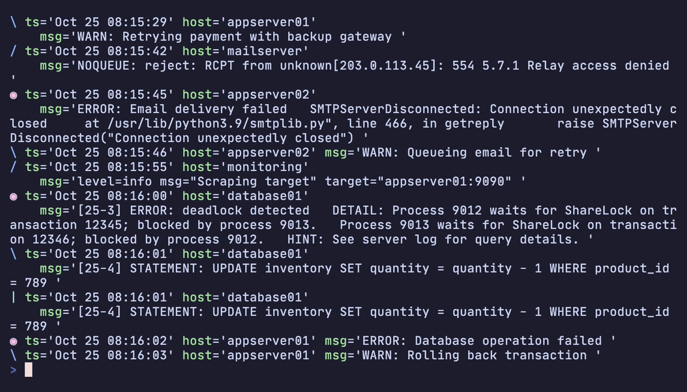

Kelora¶
Scriptable log processor for the command line.
Parse messy logs into structured events, then filter, transform, and analyze them with embedded Rhai scripting.
Experimental Tool
Kelora is a vibe-coded experimental tool under active development. APIs and behaviour may change without notice.

Parsing syslog with multiline stacktraces, filtering for errors, and showing context with-C 1
Examples¶
Spot slow or failing requests
ts=2024-07-17T11:59:40Z level=INFO method=GET path=/docs status=200 latency_ms=280
ts=2024-07-17T11:59:55Z level=INFO method=POST path=/checkout status=200 latency_ms=950
ts=2024-07-17T12:00:01Z level=INFO method=GET path=/docs status=200 latency_ms=320
ts=2024-07-17T12:00:04Z level=INFO method=POST path=/checkout status=200 latency_ms=1450
ts=2024-07-17T12:00:05Z level=ERROR method=POST path=/checkout status=502 latency_ms=2100
ts=2024-07-17T12:00:07Z level=WARN method=GET path=/billing status=200 latency_ms=900
Parse custom rollout logs instantly
kelora -f 'cols:ts level service request_id *message' examples/release_pipe.log \
--cols-sep '|' \
--levels warn,error \
-F json
{"ts":"2024-07-17 12:10:02","level":"WARN","message":"retrying payment status=SOFT_FAIL duration=890ms","request_id":"req-92","service":"checkout"}
{"ts":"2024-07-17 12:10:06","level":"ERROR","message":"final failure status=HARD_FAIL duration=1480ms cause=db_deadlock","request_id":"req-93","service":"checkout"}
Enrich JSON logs and mask secrets
{"timestamp":"2024-07-17T12:15:01Z","path":"/tenants/alpha/sessions/42","event":"login","ip":"203.0.113.10"}
{"timestamp":"2024-07-17T12:15:05Z","path":"/tenants/alpha/sessions/42","event":"heartbeat","ip":"203.0.113.10"}
{"timestamp":"2024-07-17T12:15:10Z","path":"/tenants/bravo/payments","event":"charge_failed","ip":"198.51.100.24"}
Count services in a stream
timestamp='2024-07-17T12:00:00Z' level='INFO' service='checkout'
timestamp='2024-07-17T12:00:01Z' level='ERROR' service='checkout'
timestamp='2024-07-17T12:00:01Z' level='INFO' service='billing'
timestamp='2024-07-17T12:00:02Z' level='WARN' service='search'
kelora: Tracked metrics:
billing = 1
checkout = 2
search = 1
Detect error bursts with a sliding window
{"timestamp":"2024-07-17T12:20:00Z","service":"api","level":"ERROR","message":"timeout","latency_ms":2100}
{"timestamp":"2024-07-17T12:20:01Z","service":"api","level":"INFO","message":"ok","latency_ms":600}
{"timestamp":"2024-07-17T12:20:02Z","service":"api","level":"ERROR","message":"timeout","latency_ms":2150}
{"timestamp":"2024-07-17T12:20:03Z","service":"api","level":"ERROR","message":"timeout","latency_ms":2200}
{"timestamp":"2024-07-17T12:20:05Z","service":"api","level":"WARN","message":"retrying","latency_ms":1400}
See the Quickstart for a step-by-step tour with full output.
What It Does¶
- Parse JSON, logfmt, syslog, CSV/TSV, Apache/Nginx logs, or custom formats
- Filter with Rhai expressions - keep events matching your conditions
- Transform with 100+ built-in functions - enrich, redact, extract, restructure
- Analyze with built-in metrics - track counts, sums, averages, distributions
- Output as logfmt, JSON, or CSV
How It Works¶
Kelora processes logs through a streaming pipeline with composable stages:
Input → Parse → --exec → --filter → --exec → --filter → ... → Output
↓ ↓ ↓ ↓ ↓ ↓ ↓
Files JSON transform narrow enrich narrow logfmt
stdin syslog JSON
.gz custom CSV
Each --filter and --exec runs in the order specified, passing events forward. Chain them in any sequence to build multi-stage processing logic. Read the Pipeline Model for details.
Key Features¶
- Resilient Processing - Skip bad lines automatically, continue processing
- Parallel Mode - Process large archives using all CPU cores with
--parallel - Sliding Windows - Analyze events in context with
--window - 100+ Functions - Rich built-in library for transformation and analysis
- Format Conversion - Read any format, write any format
- Metrics Tracking - Built-in counters, sums, averages, distributions
Install¶
Download from GitHub Releases (macOS, Linux, Windows) or:
Learn More¶
- Quickstart - 5-minute tour
- Tutorials - Step-by-step guides starting with the basics
- How-To - Solve specific problems
- Concepts - Understanding how Kelora works
- Reference - Functions, formats, CLI options
Run kelora --help for comprehensive command-line help screens, or browse the example files on GitHub.
Works Well With¶
Kelora focuses on normalising noisy logs into structured data. Reach for it when you need programmable filtering, enrichment, or windowed analytics in one streaming pipeline—and pair it with the tools below when you need deeper visualisation or post-processing:
- jq — process Kelora's JSON output for complex transformations, filtering, or reformatting
- lnav — explore Kelora's output in an interactive TUI with live filtering, histograms, and ad-hoc SQL queries
- qsv — analyze Kelora's CSV output with statistical operations, joins, and aggregations
- SQLite/DuckDB — load Kelora's CSV/JSON output into a database for SQL queries and reporting
- miller — transform Kelora's CSV output for reshaping, aggregating, and format conversion
License¶
Kelora is open source software licensed under the MIT License.